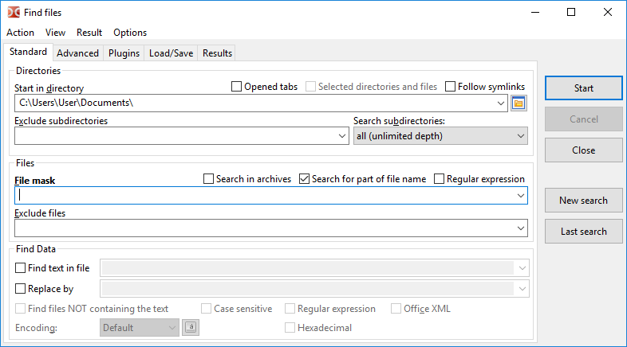
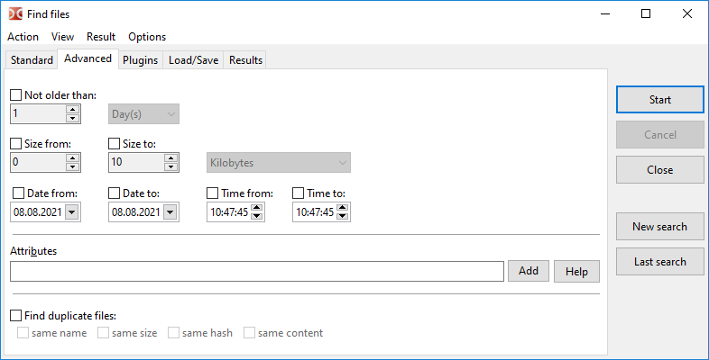
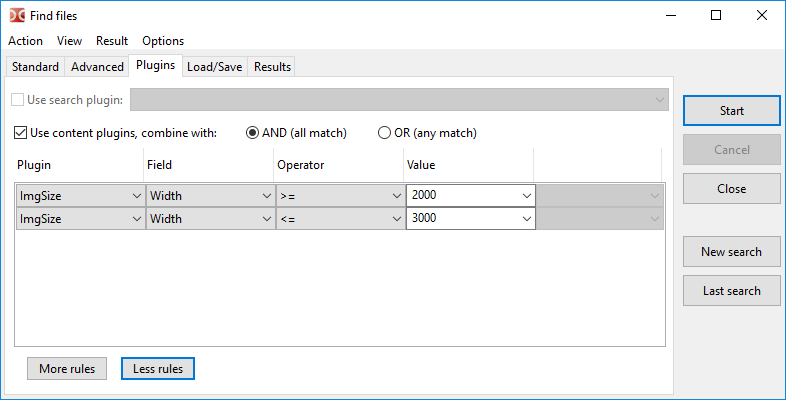
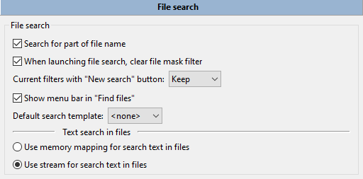

Search tool capabilities are grouped by tabs, we can switch between the tabs using Alt+1...Alt+4 key combinations.
In addition, some functions can be accessed from the main menu of this window.
On this tab we can search for files by name and their content.

The Start in directory field specifies the directory to start the search, by default will be use the current directory of the active panel.
Additional options for specifying file search locations:
Opened tabs – only directories of opened tabs will be used (tabs of active and inactive panels).
Selected directories and files – if enabled, the search will be conducted only among selected files and folders in the active panel. If there are selected files/folders in the file panel, this option will be enabled automatically.
Follow symlinks – if a symbolic link to a directory is found, the target directory will be read and used, otherwise this symbolic link will be considered a regular file.
Exclude subdirectories – a list of directories to be excluded from the search, here we can specify folder names and relative or absolute paths.
Search subdirectories can have:
current dir only,
select number of levels (from 1 to 100),
all (unlimited depth).
This setting controls the depth of the search in the filesystem tree. If set to "current dir only", the search will only be conducted in the directory specified in the "Start in directory" field (not in any subdirectories).
The File mask field sets the mask for the search. Or we can just specify the file name or part of it.
Additional options:
Search in archives – if enabled, Double Commander will try to additionally read the contents of all archives in the search directory(ies). The list of supported formats depends on the added packer plugins.
Search for part of file name – should be disabled if we want to use exact file name.
Regular expression – if enabled we can use regular expressions.
Exclude files – a list of file names to be excluded from the search. Masks are also supported.
Note: File mask, Exclude files, Start in directory and Exclude subdirectories allow to enter several values, separated with semicolon ";" without spaces. If we need to find a file with semicolon in the name, we can use regular expressions.
If the Find text in file checkbox is enabled, the process will search for the specified text in the files. We can also replace this text with any other text, specified in the Replace by field by enabling the checkbox.
Additional options:
Find files NOT containing the text – displays files, that do not have the text specified in Find text in file.
Case sensitive – indicates that uppercase should be distinguished from lowercase, e.g. "Fallout" and "fallout" would be different.
Hexadecimal – searches for hexadecimal characters (case insensitive, with or without spaces between characters, for example, "C0 C1 C2" or "c0c1c2").
Office XML – enables a search in Microsoft Office (DOCX, XLSX) and OpenOffice/LibreOffice (ODT, ODS) files.
Also we can set encoding (UTF, ISO, KOI, DOS, ANSI etc.) and enable regular expressions.
Note about text encoding: We can set the text encoding or use one of the special values:
Default – depends on the operating system and the selected system locale:
Windows: default system ANSI encoding.
Linux and other Unix-like OS: default system text encoding, modern systems usually use UTF-8.
ANSI – default system ANSI encoding (depends on the system locale).
OEM – default system OEM (DOS) encoding (depends on the system locale).
The Encoding button () allows to specify more than one encoding.
The Start button starts search, Cancel stops search and Close closes the Find files window.
New search – clears the old results and allows to start a new search (also with new conditions).
Last search – loads parameters from the previous search (in the current session, before closing Double Commander).
By default, Double Commander saves the history of the input fields, to delete unnecessary entries from the history, we can use Shift+Del, and we can also disable saving history in the Configuration settings section.
Tab Advanced allows to specify additional conditions: date, time and age of file (by modification date), minimum and maximum file size, as well as file attributes.

File attributes can be specified manually or using a small assistant on the Add button (see below for more details on using file attributes). The Help button opens the next subsection of this page.
Here we can also choose to search for duplicate files using the following one or more criteria:
compare file names;
compare file sizes;
compare file hashes: BLAKE2b (x64) or BLAKE2s checksum will be used;
compare file content (byte-by-byte comparison).
In the result will be shown file names, group number of matching files and file locations. Also after feed to listbox we can use special selection mode, where we can select only duplicates: Select a Group and Unselect a Group in the Mark submenu.
To search for specific attributes we must enter a string pattern, which specifies which attributes are searched for, and if they should be enabled or disabled.
A single attribute is represented with the following format:
<attribute>+ or <attribute>-
The plus sign means that the file must have that attribute set, a minus sign means that the file must not have that attribute set.
The various <attribute> identifiers are as follows:
| Attributes in Windows | |
|---|---|
| Attribute letter | What it stands for |
a | archive |
c | compressed (NTFS compression) |
d | directory |
e | encrypted (EFS encryption) |
h | hidden |
l | symlink |
p | sparse |
r | read only |
s | system |
t | temporary |
| Attributes in Unix/Linux (Permissions) | |
|---|---|
| Permissions letters | What it stands for |
ur | user read |
uw | user write |
ux | user execute |
gr | group read |
gw | group write |
gx | group execute |
or | others read |
ow | others write |
ox | others execute |
us | set user ID |
gs | set group ID |
sb | sticky bit |
| Attributes in Unix/Linux (File Types) | |
|---|---|
| File Types letters | What it stands for |
b | block device |
c | character device |
d | directory |
f | named pipe (FIFO) |
l | symlink |
r | regular file |
s | socket |
In Unix/Linux we may also use octal representation of permissions. For example 0750 is the same as ur, uw, ux, gr and gx combined.
Several attributes may be combined together with an AND relationship. Just specify one pattern after another.
For example: r+s+h+ matches files that have all three: read-only, hidden and system attributes set.
Furthermore, such groups of AND attributes may be combined together with an OR relationship. This is done by using the "|" character (vertical bar).
For example: r+|s+h+ matches files that have either:
It is possible to negate AND sequences using "!" character specified at the start of the sequence.
For example: !r+s+h+ matches files that don't have all three: read-only, hidden and system attributes set. The matched file may have none, one or more of those attributes set, but not all of them.
Negation only applies to AND sequences, thus pattern !r+|!s+h+ matches files that either:
r-)| Example in Windows | |
|---|---|
| Examples letters | How it is interpreted |
a+s-h- | matches files that have archive attribute set and don't have neither system nor hidden attributes set |
e+|c+ | matches files that are either compressed or encrypted |
d- | matches files but not directories |
| Example in Unix/Linux | |
|---|---|
| Examples letters | How it is interpreted |
uw+|gw+|ow+ | matches files that are writable either by user, group or anybody else |
222+ | matches files that are writable by user, and by group, and by anybody else |
d+ox+ | matches directories that are accessible by anybody |
!700+ | matches files that are not fully accessible to the user |
Search with the search (DSX) and content (WDX) plugins (description of plugin types and their installation is described here).
An example of images search by width with minimum and maximum values:

The DSX plugins interface allows to send them parameter values from the "Standard" and "Advanced" tabs, the exact list of passed values depends on the capabilities of a particular plugin.
WDX plugins complement the search, their fields can be combined according to the following rules:
AND (all match) – all conditions must match.
OR (any match) – one match is enough.
Operator and Value depend on the type of data returned by the plugin field: number, string, date, time or boolean type. For some numerical values, we can choose a unit of measurement (for example, for size or duration). The following compare operations are supported:
| Operator | Description |
|---|---|
= |
equal |
!= |
not equal |
=(case) |
equal, case sensitive |
!=(case) |
not equal, case sensitive |
> |
larger |
< |
smaller |
>= |
larger or equal |
<= |
smaller or equal |
contains |
string contains specific text |
!contains |
string does not contain specific text |
contains(case) |
string contains specific text, case sensitive |
!contains(case) |
string does not contain specific text, case sensitive |
regexp |
string matches regular expression |
!regexp |
string does not match regular expression |
Tab Load/Save – allows to save search parameters so they can be used again later.
Also, here we can see the templates created in the program settings (Colors > File types, Tooltips) and in some tools (Select a Group, Synchronize directories).
There is a field with a hint under the list of templates: for the selected template, the values of File mask and Start in directory (if it was saved) are displayed.
This tab contains results of the search (just a list of full filenames) and has the following buttons:
View – opens selected file in the viewer (F3).
Edit – opens selected file in the editor (F4).
Go to file – closes search window, opens the directory of the selected file in the active file panel and places the cursor on this file (Enter or double click).
Feed to listbox – transfers a list of the found files in the active file panel.
The context menu is also available:
Open In New Tab(s) – like the Go to file command, but the selected file will be opened in the background tab (several selected files will be opened in separate background tabs).
Show In Viewer.
Show In Editor.
Remove from list (or Del) – allows to remove unsuitable results from the list (the file system will not be affected).
Show all found items – cancels the action of the previous command.
To select several files, we can use the mouse and the Ctrl and Shift keys or Shift and arrows.
The left arrow and right arrow keys switch the focus between the list of search result and the New search button.
Additional parameters associated with the search tool are presented on the File operations > File search settings section.

File search:
Search for part of file name – If unchecked, Double Commander will search for the exact name match.
When launching file search, clear file mask filter – If enabled, Double Commander will automatically clear the File mask field each time.
Current filters with "New search" button – sets the state of the rest of the search parameters: Double Commander will keep them, reset to default state or ask.
Show menu bar in "Find files" – This menu contains the commands of the find files dialog (also hotkeys are shown) and items for quick jump to this section of settings and to the hotkey settings.
Default search template – We can choose one of the previously saved search templates and Double Commander will use its parameters as default parameters each time when we open the find files dialog.
Text search in files:
Use memory mapping for search text in files – Copies the file into virtual memory before performing the search. It's faster, but needs a more powerful computer.
Use stream for search text in files – Splits file into parts, then the search begins (slower, but fewer resources are required).